프레임워크와 위젯: 이미지 로딩과 스크롤
9월에 프레임워크 쪽에서 가장 많이 손댄 곳은 이미지 로딩과 스크롤이에요. 하나씩 데모 화면과 함께 볼게요.
이미지가 오기 전의 빈 상자 없애기
DecorationImage에 placeholder를 지정할 수 있게 됐어요. 진짜 이미지를 받는 동안 빈 상자 대신 미리 넣어 둔 그림을 보여 줘요. FadeInImage에는 전환 방식을 고르는 새 열거형 FadeInImageTransition이 생겼어요.
아래 데모의 왼쪽 빨간 칸이 sequential이에요. placeholder가 먼저 사라지고 나서 이미지가 나타나기 때문에, 그 사이에 체크무늬 배경과 'Blank Gap Exposed' 경고가 보여요. 오른쪽 초록 칸의 fadeInOver는 placeholder 위로 이미지가 바로 겹쳐 나타나서 빈 틈이 없어요.
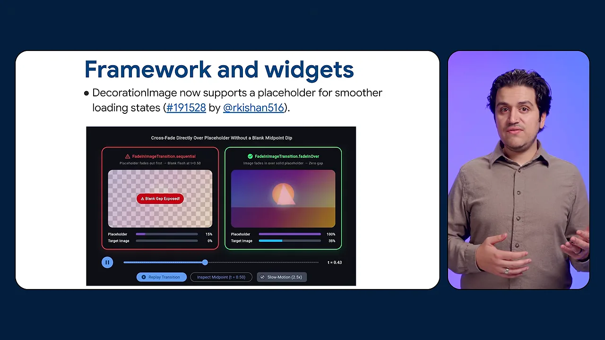
스크롤바 커서와 긴 목록
RawScrollbar에 데스크톱·웹용 mouseCursor 속성이 생겼어요. 데모의 왼쪽(Before)은 스크롤바 손잡이에 올려도 기본 화살표 커서 그대로예요. 오른쪽(After)은 손잡이 위에서 'grab' 커서로 바뀌고, 텍스트 위에서는 I자 커서를 그대로 지켜요.
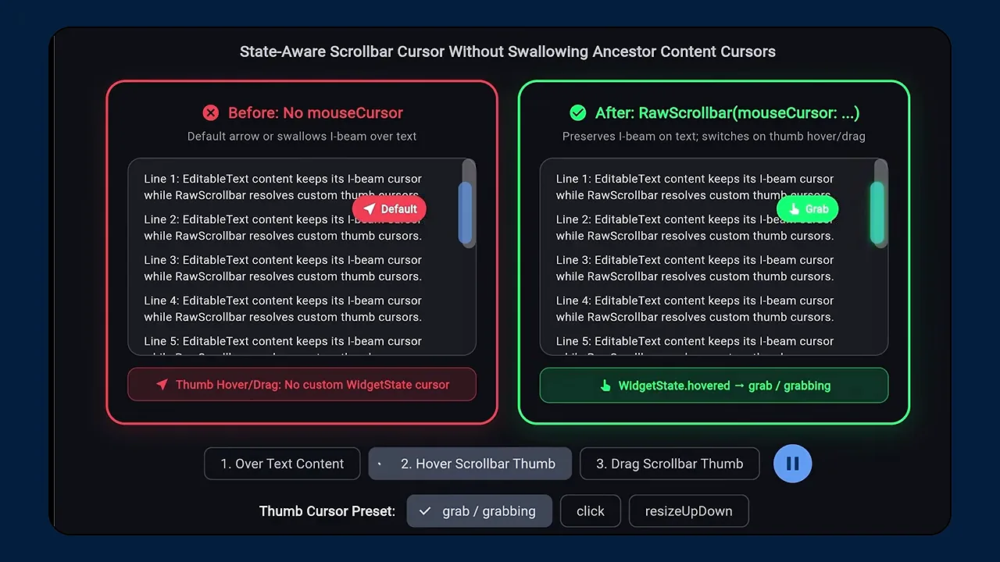
ListView.separated는 이제 itemExtentBuilder를 받아요. 영상의 설명을 그림으로 옮기면 이래요. 예전엔 어떤 항목의 위치를 알려면 그 앞 항목을 모두 만들고 크기를 재야 했어요. 이제는 높이를 돌려주는 함수만 있으면 계산으로 바로 알 수 있어요.
라우팅 포커스와 지역화 이전
MaterialApp.router나 CupertinoApp.router를 쓰면 라우팅이 이제 FocusScope로 감싸져요. 슬라이드에는 둘의 바탕인 WidgetsApp.router로 적혀 있어요. 덕분에 웹에서 자동완성 같은 오버레이가 포커스를 잃지 않고, 어떤 라우팅 API(Application Programming Interface)를 써도 포커스가 같은 식으로 움직여요.
Material·Cupertino 지역화 클래스는 deprecated 됐어요. 대신 material_ui·cupertino_ui 패키지를 써요. 영상이 보여 준 명령 한 줄이면 옮겨 줘요.
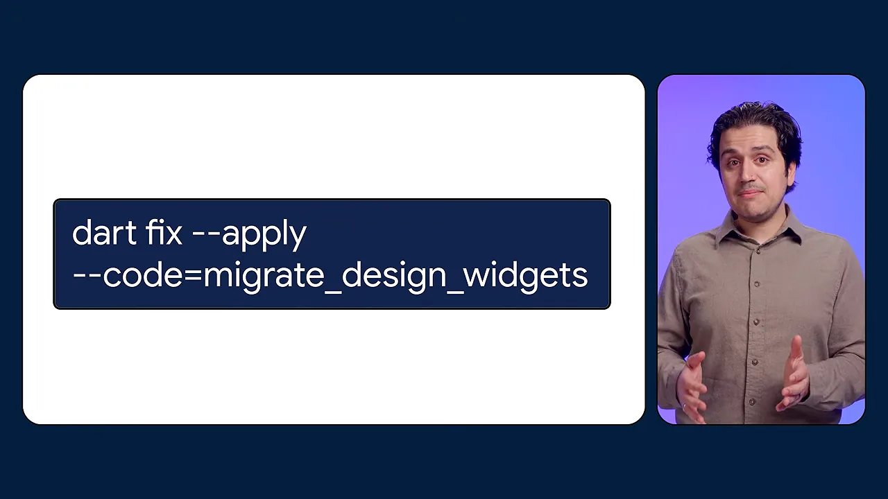
dart fix --apply --code=migrate_design_widgets스크롤과 텍스트 다듬기
BouncingScrollPhysics가 오버스크롤 전용 고무줄 스프링을 갖게 됐어요. 데모의 왼쪽 Before는 'Floaty recovery (~0.81s settle time)', 오른쪽 After는 'Crisp initial snap (~0.63s exponential decay)'라고 적혀 있어요. 아래 그래프의 두 곡선 중 초록 선(새 스프링)이 처음에 더 빨리 꺾여 돌아와요.
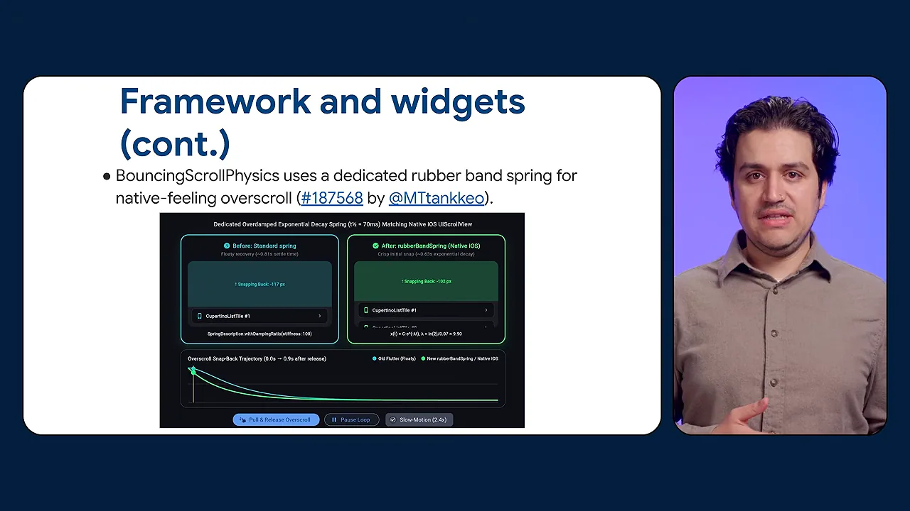
나머지 두 가지는 텍스트 편집 쪽이에요. TextPainter가 줄 정보(line metrics)를 캐시해서, 가운데·오른쪽 정렬 텍스트 필드에서 위아래 화살표 키가 캐럿을 제대로 옮기고 메모리 할당도 줄었어요. 선택 핸들을 위로 끌 때는 화면이 아래로 튀어 돌아가지 않고 커서를 계속 따라가요.
| 변경 | PR(Pull Request) |
|---|---|
DecorationImage placeholder | #191528 |
ListView.separated의 itemExtentBuilder | #191157 |
WidgetsApp.router의 FocusScope | #192601 |
지역화 deprecated + dart fix | #192954 |
BouncingScrollPhysics 고무줄 스프링 | #187568 |
TextPainter 줄 정보 캐시 | #191223 |
| 선택 핸들 자동 스크롤 | #185206 |
PR 번호는 영상 슬라이드에 적힌 그대로예요. flutter/flutter 저장소에서 찾아볼 수 있어요.
접근성: 키보드와 스크린 리더
접근성 변경은 키보드 사용자와 스크린 리더 사용자 쪽이 하나씩, 그리고 검사 도구 쪽이 하나예요.
Esc 키를 누르면 열린 툴팁이 닫혀요. 다른 단축키를 건드리지 않고 툴팁만 치울 수 있어서 WCAG(Web Content Accessibility Guidelines) 1.4.13을 맞추는 데 도움이 돼요. 슬라이더는 전용 시맨틱스 역할을 갖게 돼서, 스크린 리더가 어느 플랫폼에서든 '슬라이더'라고 정확히 읽어 줘요.
탭 대상이 너무 작은 것 같은 흔한 실수를 찾는 접근성 검사는 지금까지 테스트 환경에서만 돌았어요. 이번에 기능 플래그를 켜지 않아도 실행 중인 앱에서 돌 수 있게 프레임워크가 바뀌었고, 영상은 앞으로 DevTools에서 바로 돌릴 수 있게 하겠다고 해요. 아래 슬라이드의 두 번째 줄은 OverlayPortal 안에서 시맨틱스 영역이 어긋나던 문제를 고친 거예요. 메뉴나 팝오버를 이걸로 만들었다면 스크린 리더가 이제 제자리를 강조하고 읽어요.
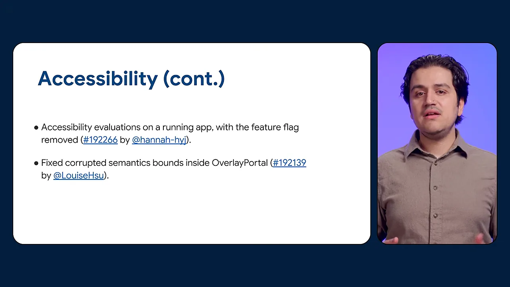
엔진과 그래픽: 렌더링 버그와 Impeller
엔진 쪽은 렌더링 버그 수정과 Impeller 성능 개선이 섞여 있어요. 그라디언트·블러·회전을 함께 쓴 도형이 잘리던 버그(#192136)가 먼저 고쳐졌어요.
CupertinoSheetRoute에서 백드롭 필터와 Material 잉크 효과를 함께 쓰면 둥근 모서리가 각지게 나오던 문제도 해결됐어요. 데모의 왼쪽 Before에서는 시트 헤더 왼쪽 위 모서리가 빨간 원 안에서 90도로 각져 있고 '90° Square Bleed' 배지가 붙어 있어요. 오른쪽 After는 같은 자리가 둥글게 남아 'r = 24px Rounded'로 표시돼요.
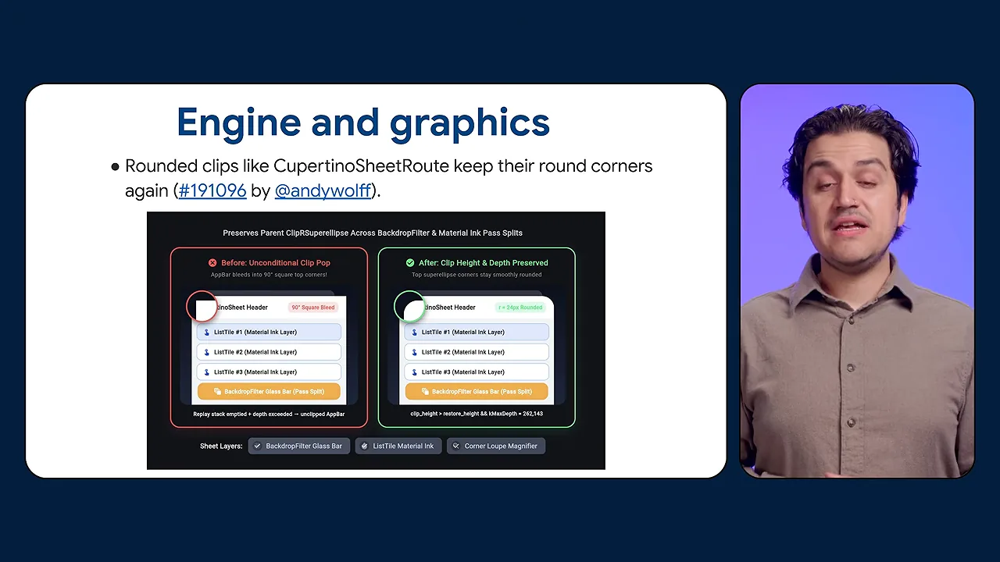
나머지는 화면 데모 없이 말로 설명했어요. 표로 정리하면 이래요.
| 변경 | 무엇이 좋아지나요 | PR |
|---|---|---|
| Impeller가 원·도형 그릴 때 힙 할당 제거 | 래스터 스레드 일이 줄어 코드 수정 없이 빨라져요 | #192679 |
| 투명도가 바뀌는 애니메이션 WebP·GIF 디코딩 | 뒤쪽 프레임이 안 불리던 5년 묵은 문제가 닫혔어요 | #193113 |
| Flutter GPU(Graphics Processing Unit) 2D 텍스처 배열 | 여러 층을 텍스처 하나에 담을 수 있어요 | #190036 |
| 공유 백드롭으로 묶은 백드롭 필터 안 콘텐츠 | 크래시 없이 그려져요 | #193176 |
| Adreno 밉맵 우회를 해당 텍스처에만 적용 | 직접 올린 텍스처가 축소돼도 선명해요 | #190186 |
영상에서 가장 체감이 큰 건 첫 줄이에요. 원과 도형은 거의 모든 앱이 그리는 것이라, 매번 하던 메모리 할당을 없앤 것만으로 앱 전체가 조금씩 가벼워져요. 발표자는 GIF 발음 농담도 하나 던지는데, 내용과는 상관이 없어요.
웹: 캐시, 선명한 텍스트, Safari
웹에서 가장 실용적인 변화는 배포 캐시 문제예요. flutter build web의 --web-content-hash 플래그가 이제 공개됐어요. 아래 슬라이드 첫 줄이 그 내용이고, 둘째 줄은 브라우저의 CSS(Cascading Style Sheets) safe-area 여백을 FlutterView.viewPadding으로 넘겨준다는 내용이에요.
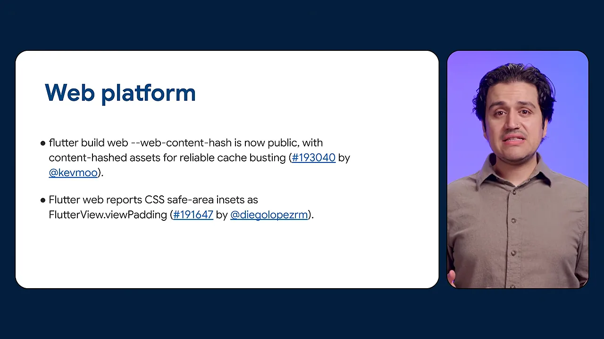
내용 해시 파일 이름이 왜 캐시 문제를 푸는지 영상의 설명을 그림으로 옮겼어요. 파일 이름이 늘 같으면 브라우저는 새 배포가 있어도 갖고 있던 사본을 계속 쓸 수 있어요. 내용이 바뀌면 이름도 바뀌게 하면, 새 파일은 브라우저 입장에서 처음 보는 파일이라 반드시 새로 받아요. 이런 기법을 캐시 버스팅이라고 해요.
나머지 웹 변경은 화면이 어긋나거나 흐려지는 문제를 고친 것들이에요.
- iOS Safari에서 텍스트 칸을 탭하면 페이지가 확대되던 문제를 시맨틱 입력 크기를 16px로 맞춰 막았어요. 폼을 탭해도 페이지가 그대로 있어요(#192328).
- 글리프를 정수 픽셀에 맞춰 텍스트가 흐리거나 글자가 잘리지 않아요. 래스터 캐시도 그대로 효과를 내요(#191736).
- 이미지가 그려지는 동안 이미지 데이터를 살려 둬서, 가끔 검은 상자로 나오던 문제가 사라졌어요(#192516).
- WebAssembly(WasmGC) 빌드는 브라우저가 못 돌리면 자동으로 JavaScript로 돌아가요. 슬라이드에는 Firefox와 Safari에 대한 엄격한 기능 검사가 함께 적혀 있어요(#193180).
Android와 iOS
Android: 인텐트 보안 강화
Android에서 가장 중요한 건 보안 변경이에요. 이제 다른 앱이 조작한 인텐트를 보내서 내 앱의 Dart 진입점이나 엔진 인자를 바꿀 수 없어요(#190249). 호환성이 깨지는 변경이라, 영상은 이 동작에 기대는 앱이라면 마이그레이션 가이드를 보라고 해요. 화면에 그 문서 주소가 떠요.
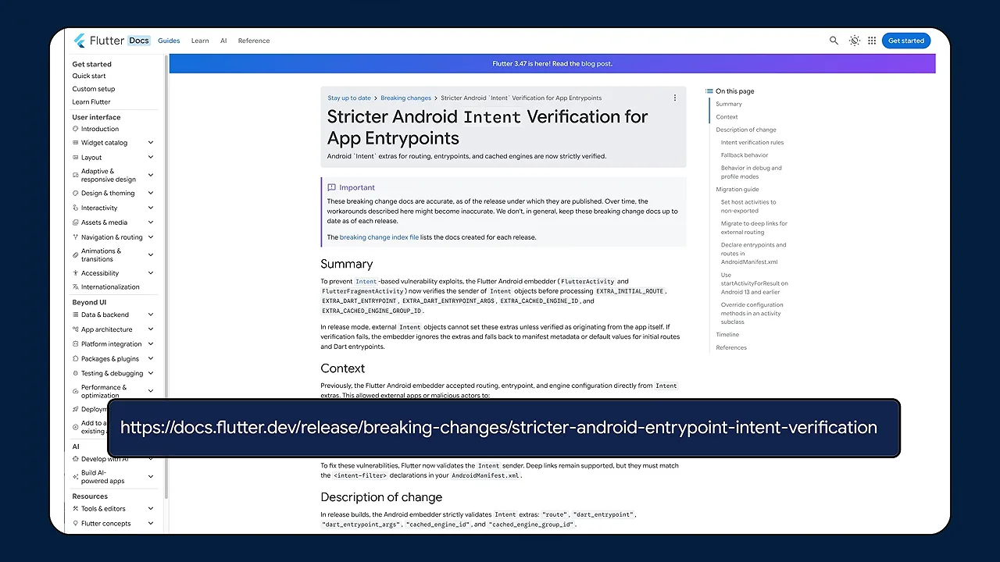
Android: 플랫폼 뷰와 템플릿
지도나 웹뷰 같은 플랫폼 뷰 안에서 여러 손가락의 좌표가 뒤바뀌던 문제가 고쳐졌어요(#191631). Flutter가 제스처를 넘겨받은 뒤엔 Android에 버퍼링 없는 터치 이벤트를 요청해서, 네이티브 뷰 위 스크롤이 훨씬 부드러워요(#192259). 둘 다 API를 바꿀 필요가 없어요.
새 프로젝트 템플릿은 Android Gradle Plugin 9.3.1과 새 Kotlin·Gradle 버전을 써서 Android 17에 바로 대응해요(#193262). 시작 중 카메라·영상 텍스처를 등록하는 플러그인 때문에 나던 크래시(#192951), 동적 아이콘용 launcher activity-alias를 flutter run이 못 찾던 2019년 이슈(#187251)도 닫혔어요.
iOS
iOS 변경은 네 가지예요. 아래 슬라이드는 앞의 두 개예요. 외부 하드웨어 키보드로 프랑스어·스페인어·터키어 같은 악센트 문자를 칠 수 있게 됐고, 엔진이 Apple Translate API를 받을 배관을 깔았어요.
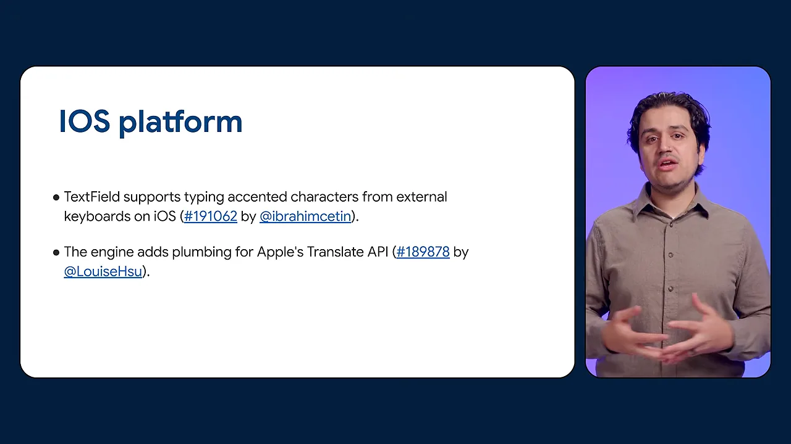
나머지 둘은 엔진을 여러 화면에 붙여 쓰는 경우를 위한 거예요. 엔진을 다른 뷰 컨트롤러로 옮겨도 접근성 브리지가 다시 붙어서 VoiceOver가 끊기지 않아요(#187167). 이미 실행 중이거나 끝난 엔진에 run을 부르면 오류 대신 안전하게 NO를 돌려주도록 오류 검사가 늘었어요(#192465).
데스크톱: 실험 단계 창 API
데스크톱은 실험 단계인 창(windowing) API가 계속 자라고 있어요. macOS의 일반 창과 대화 상자 창은 내용에 맞춰 크기를 잡을 수 있고(#185256), 첫 프레임이 준비된 뒤에 나타나서 빈 창이 번쩍이지 않아요.
Linux에는 창 장식을 직접 다루는 실험 API가 생겼어요. 아래 데모의 왼쪽 Before는 시스템 GTK(GIMP Toolkit) 제목 표시줄이 붙은 불투명한 창이에요. 오른쪽 After는 BaseWindowControllerLinux로 만든 창으로, 직접 그린 제목 표시줄(신호등 버튼과 'Drag to Move')과 72% 투명 배경, 둥근 모서리를 갖고 있어요. 아래 버튼에 적힌 setDecorated(false), setAppPaintable(true)가 이를 켜는 호출이에요.
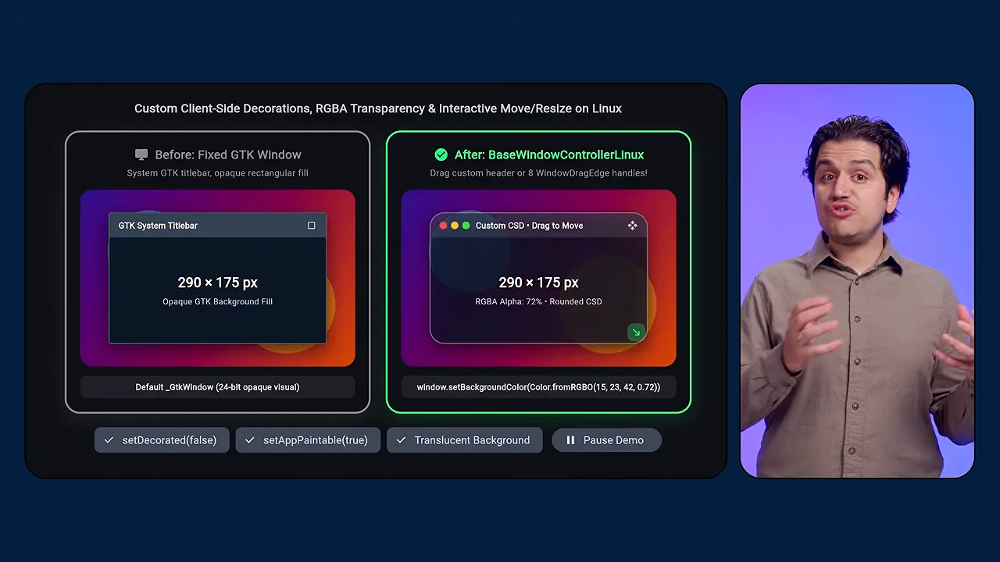
나머지는 플랫폼별 버그 수정이에요.
| 플랫폼 | 변경 | PR |
|---|---|---|
| Linux (Wayland) | 툴팁·팝업이 검게 나오던 문제, 팝업 크기 조절 때 컴포지터가 죽던 문제 수정 | #192910 |
| Windows | 여러 창을 쓰는 앱에서도 핫 리스타트가 창을 정리하고 다시 만들어요 | #193225 |
| Windows | 팝업 위치를 옮길 때 나던 크래시(null 역참조) 수정 | #191479 |
| Windows | IME(Input Method Editor) 조합 범위를 지켜서 중국어 등 입력 중인 글자가 깨지지 않아요 | #189968 |
개발 도구와 첫 기여자
마지막 영역은 개발 도구예요. 하나하나는 작지만 매일 쓰는 명령이 빨라지고 덜 귀찮아지는 변경이 많아요.
위젯 미리보기와 플러그인 등록 순서
위젯 미리보기는 크기 제약이 없는 미리보기에서 알기 어려운 assertion 대신, 문제를 설명하고 미리보기 크기 매개변수를 알려 주는 오류를 보여 줘요(#193005).
플러그인은 이제 이름순이 아니라 의존 순서로 등록돼요(#191591). 영상의 설명을 그림으로 옮기면 이래요. 플러그인 B가 A에 기댄다면, 이름순에선 B가 먼저 초기화될 수 있어요. 의존 순서에선 A가 늘 먼저예요.
네이티브 코드와 새 템플릿
코드 에셋으로 만든 네이티브 라이브러리를 DynamicLibrary.codeAsset으로 에셋 ID만 가지고 바로 불러올 수 있어요. 빌드 훅으로 만든 라이브러리를 쓰면서도 핫 리로드가 그대로 돼요(#188947).
플랫폼 API가 필요한 새 플러그인을 만들면 템플릿이 원시 메서드 채널 대신 Pigeon을 써요(#192886). 처음부터 타입 안전한 플랫폼 호출로 시작하는 거예요. flutter create 앱 템플릿은 material_ui 패키지를 가져와서, 새 프로젝트가 첫날부터 분리된 Material 라이브러리를 써요(#192947).
CLI와 테스트
아래 슬라이드는 CLI(Command Line Interface) 쪽 변경 두 개예요. flutter analyze가 같은 문제를 여러 번 보여 주지 않고, 대화형으로 기기를 고르면 다음에 그 질문을 건너뛸 수 있게 -d 플래그를 알려 줘요. 영상은 이 -d 제안이 2020년부터 요청받던 기능이라고 해요.
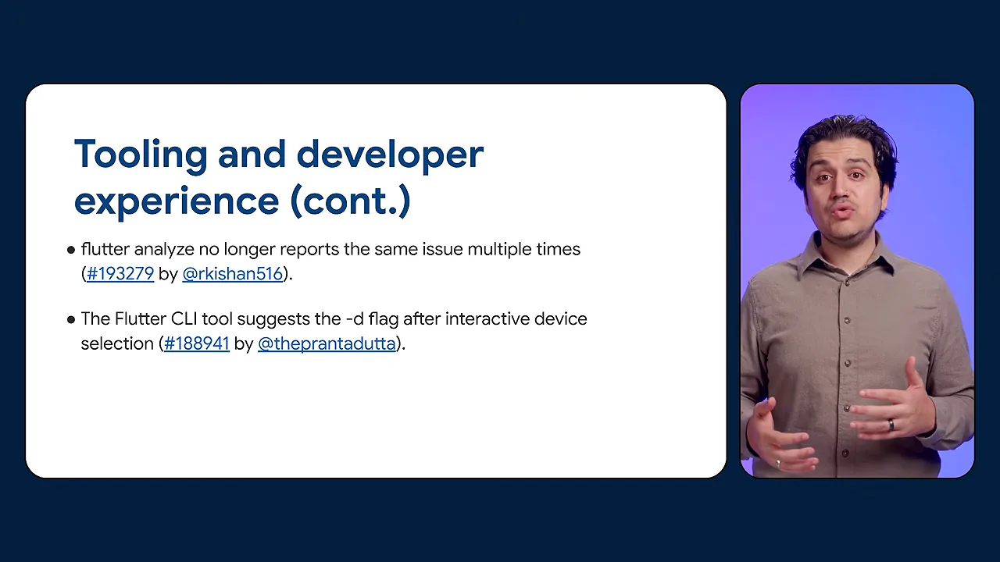
그 밖에 CLI는 시작할 때마다 Android SDK(Software Development Kit)를 찾지 않고, SDK가 필요한 명령에서만 찾아서 평소 명령이 빨라졌어요(#191972). 웹에서도 flutter test로 골든 테스트를 로컬에서 돌릴 수 있어서, push 전에 화면 회귀를 잡을 수 있어요(#191386). Chrome을 대상으로 한 flutter drive가 멈추던 문제도 고쳐서 웹 통합 테스트가 끝까지 돌아요(#193459).
처음 기여한 사람들
영상은 9월에 처음 기여한 사람들의 프로필을 띄워 감사를 전해요. 화면에 İbrahim Çetin, Uros Radulovic, Hamed, Anas Saifi, Afzal Najam, serhii-k, Irfan Khalid, Shawn-Yu-Dev가 보여요. 기여하고 싶다면 docs.flutter.dev/contribute에서 시작하라고 안내해요.
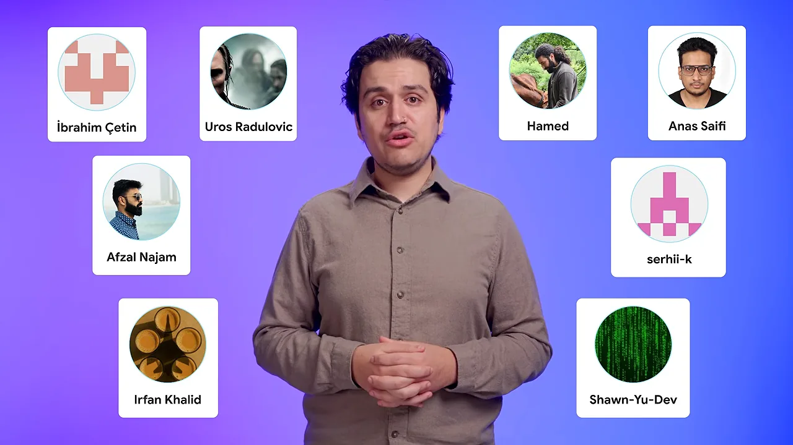